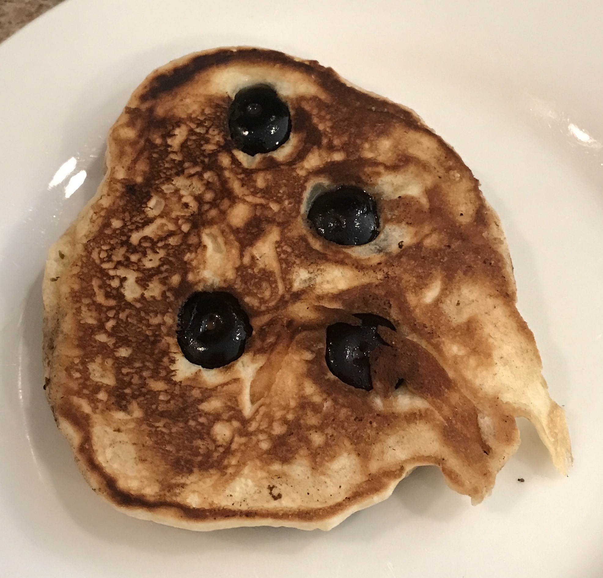

Sunday Morning Pancakes
Good Ol' Fashioned Breakfast

Who doesn't love a good pancake? Impress the whole household with these delicious morning treats.
It's been said they're good enough to eat without syrup!
Ingredients
- 1 ½ cups all-purpose flour
- 3 ½ teaspoons baking powder
- 1 tablespoon white sugar
- ¼ teaspoon salt, or more to taste
- 1 ¼ cups milk
- 3 tablespoons butter, melted
- 1 egg
- blueberries (optional)
Directions
- Sift dry ingredients together. Make a well and add wet ingredients, mixing until smooth. (Add blueberries if desired)
- Oil frying pan and heat to medium. Pour 1/4 cup of mix and cook for about 2-3 minutes or until surface bubbles.